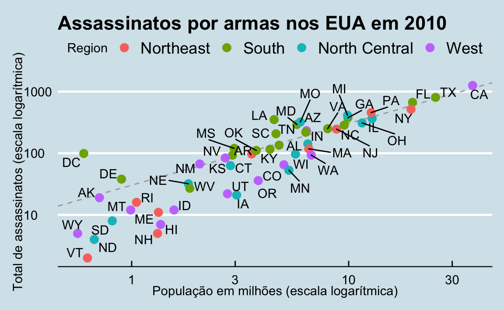

Capítulo 7 ggplot2
A visualização de dados exploratórios é talvez a maior vantagem de R. É possível passar rapidamente da ideia para os dados para representar graficamente com um equilíbrio único de flexibilidade e facilidade. Por exemplo, o Excel pode ser mais fácil que o R para alguns gráficos, mas não é tão flexível. O D3.js pode ser mais flexível e poderoso que o R, mas leva muito mais tempo para gerar um gráfico.
Ao longo do livro, criaremos gráficos usando o pacote ggplot224.
Existem muitas opções gráficas disponíveis em R. De fato, os recursos gráficos que vêm com uma instalação básica do R já são bastante poderosos. Também existem outros pacotes para criar gráficos como __grid__elattice. Neste livro, decidimos usar ggplot2 porque ele divide gráficos em componentes de uma maneira que permite aos iniciantes criar gráficos relativamente complexos e esteticamente agradáveis usando sintaxe intuitiva e relativamente fácil de lembrar.
Um dos motivos pelo qual ggplot2 é geralmente mais intuitivo para iniciantes é porque ele usa uma gramática gráfica25, o _gg_doggplot2. Isso é análogo a como a aprendizagem de gramática pode ajudar um aluno a criar centenas de frases diferentes, aprendendo apenas um pequeno número de verbos, substantivos e adjetivos, em vez de memorizar cada frase específica. Da mesma forma, aprendendo uma pequena quantidade dos componentes básicos do ggplot2 e sua gramática, você poderá criar centenas de gráficos diferentes.
Outro motivo pelo qual ggplot2 é fácil para iniciantes é que seu comportamento padrão foi cuidadosamente escolhido para satisfazer a grande maioria dos casos e também é visualmente agradável. Como resultado, é possível criar gráficos informativos e elegantes com código relativamente simples e legível.
Uma limitação de __ggplot2_é que ele foi projetado para funcionar exclusivamente com tabelas de dados no formato_tidy (onde linhas são observações e colunas são variáveis). No entanto, uma porcentagem substancial dos conjuntos de dados com os quais os iniciantes trabalham estão neste formato ou podem ser convertidos para ele. Uma vantagem dessa abordagem é que, desde que nossos dados sejam arrumados, ggplot2 simplifica o aprendizado de código e gramática de gráficos para uma variedade de gráficos.
Para usar ggplot2, eles terão que aprender várias funções e argumentos. Como é difícil memorizar, recomendamos que você tenha a folha de referência do ggplot2 à mão. Você pode obter uma cópia aqui: [https://www.rstudio.com/wp-content/uploads/2015/03/ggplot2-cheatsheet.pdf…………….(https://www.rstudio.com/wp-content/uploads/ 2015/03/ ggplot2-cheatsheet.pdf) ou simplesmente faça uma pesquisa na Internet por “ggplot2 cheat sheet”.
7.1 Os componentes de um gráfico
Construiremos um gráfico que resume o conjunto de dados de assassinatos por armas nos Estados Unidos da seguinte forma:
Podemos ver claramente quanto os estados variam de acordo com o tamanho da população e o número total de assassinatos. Não é de surpreender que também exista uma relação clara entre o total de assassinatos e o tamanho da população. Um estado que cai na linha tracejada cinza tem a mesma taxa de homicídios que a média dos EUA. As quatro regiões geográficas são indicadas com cores, o que mostra como a maioria dos estados do sul tem taxas de homicídio acima da média.
Essa visualização de dados mostra praticamente todas as informações na tabela de dados. O código necessário para criar o gráfico é relativamente simples. Vamos aprender a criá-lo parte por parte.
O primeiro passo para aprender ggplot2 é ser capaz de separar um gráfico em componentes. Começaremos examinando o gráfico acima e introduzindo algumas das terminologias de ggplot2. Os três principais componentes a serem considerados são:
- Data: O conjunto de dados dos canhões de armas dos EUA está sendo resumido. Nós nos referimos a isso como o componente data.
- Geometria: O gráfico acima é um diagrama de dispersão. Isso é chamado de componente geometry. Outras geometrias possíveis são diagrama de barras, histograma, densidades suaves, gráfico QQ e diagrama de caixa.
- Mapeamento estético: o gráfico usa várias dicas visuais para representar as informações fornecidas pelo conjunto de dados. Os dois sinais mais importantes neste gráfico são as posições dos pontos no eixo xe no eixo y, representando o tamanho da população e o número total de assassinatos, respectivamente. Cada ponto representa uma observação diferente e mapeamos os dados dessas observações e as pistas visuais nas escalas x e y. A cor é outra dica visual que atribuímos à região. Nós nos referimos a isso como o componente mapeamento estético. Como definimos o mapeamento depende de qual geometria estamos usando.
Também observamos que:
- Os pontos são rotulados com abreviações de estado.
- O intervalo do eixo xe o eixo y parecem ser definidos pelo intervalo dos dados. Ambos estão em escalas logarítmicas.
- Existem rótulos, um título, uma lenda e usamos o estilo da revista “The Economist”.
Agora vamos construir o gráfico parte por parte. Vamos começar carregando o conjunto de dados:
7.2 objetos ggplot
A primeira etapa na criação de um gráfico ggplot2 é definir um objeto ggplot. Fazemos isso com a função ggplot, que inicializa o gráfico. Se lermos a página de ajuda para esta função, veremos que o primeiro argumento é usado para especificar quais dados estão associados a este objeto:
Também podemos pipe os dados como o primeiro argumento. Portanto, essa linha de código é equivalente à anterior:

O código cria um gráfico, neste caso, um quadro em branco, pois a geometria não foi definida. A única opção de estilo que vemos é um fundo cinza.
O que aconteceu é que o objeto foi criado e, por não ter sido designado, foi automaticamente avaliado. Mas podemos atribuir nosso gráfico a um objeto, por exemplo:
Para representar o gráfico associado a este objeto, simplesmente imprimimos o objeto p. Cada uma das duas linhas de código a seguir produz o mesmo gráfico que vemos acima:
7.3 Geometrias
No ggplot2 criamos gráficos adicionando layers (layers em inglês). As camadas podem definir geometrias, calcular estatísticas de resumo, definir quais escalas (scales em inglês) usar ou até alterar estilos. Para adicionar camadas, usamos o símbolo +. Em geral, uma linha de código ficará assim:
DADOS%>%
ggplot()+ CAMADA 1 + CAMADA 2 + … + CAMADA N
Geralmente, a primeira camada que adicionamos define a geometria. Queremos fazer um diagrama de dispersão. Que geometria devemos usar?
Observando rapidamente a folha de referência, vemos que a função usada para criar gráficos com essa geometria é geom_point.


(Imagem cortesia de RStudio26. Licença CC-BY-4.027.)
Os nomes das funções de geometria seguem o padrão: geom_X onde X é o nome da geometria. Alguns exemplos incluem geom_point, geom_bar e geom_histogram.
Para que geom_point funciona bem, precisamos fornecer dados e uma correspondência. Nós já conectamos o objeto p com tabela de dados murders e se adicionarmos a camada geom_point, isso por padrão usa os dados do assassinato. Para descobrir quais correspondências são esperadas, leia a seção Estética da página de ajuda de geom_point:
> Aesthetics
>
> geom_point understands the following aesthetics (required aesthetics are in bold):
>
> x
>
> y
>
> alpha
>
> coloure, como esperado, vemos que pelo menos dois argumentos são necessários x e y.
7.4 Mapeamentos estéticos
Os __mapeamentos estéticos_ descrevem como as propriedades dos dados estão conectadas às características do gráfico, como a distância ao longo de um eixo, o tamanho ou a cor. A função aes conecta os dados com o que vemos no gráfico, definindo atribuições estéticas e essa será uma das funções que mais serão usadas na representação gráfica. O resultado da função aes é frequentemente usado como argumento para uma função de geometria. Este exemplo produz um gráfico de dispersão do total de assassinatos versus população em milhões:
Nós podemos remover o x = e y = se quiséssemos, pois esse é o primeiro e o segundo argumento esperado, como visto na página de ajuda.
Em vez de definir nosso gráfico do zero, também podemos adicionar uma camada ao objeto p que foi definido anteriormente como p <- ggplot(data = murders):

A escala e os rótulos são definidos por padrão ao adicionar essa camada. Como as funções dplyr, aes ele também usa os nomes de variáveis do componente do objeto: podemos usar population e total sem ter que chamá-los como assassinatos $population and murders$ total NA a é NA população NA total NA aes, eles receberão um erro.
7.5 Camadas
Uma segunda camada no gráfico que queremos criar envolve adicionar um rótulo a cada ponto para identificar o estado. As funções geom_label e geom_text nos permite adicionar texto ao gráfico com ou sem um retângulo atrás do texto, respectivamente.
Como cada ponto (cada estado neste caso) possui um rótulo, precisamos de um mapeamento estético para fazer a conexão entre os pontos e os rótulos. Lendo a página de ajuda, aprendemos que o mapeamento entre o ponto e o rótulo é fornecido através do argumento label do aes. Portanto, o código fica assim:

Adicionamos com sucesso uma segunda camada ao gráfico.
Como exemplo do comportamento único de aes mencionado acima, observe que esta chamada:
ok enquanto esta chamada:
lhe dará um erro desde abb não foi encontrado porque está fora de funcionamento aes. A capa geom_text não sei onde encontrar abb porque é um nome de coluna e não uma variável global.
7.5.1 Como testar vários argumentos
p + geom_point(aes(population/10^6, total), size = 3) +
geom_text(aes(population/10^6, total, label = abb))
size no é um mapeamento: enquanto os mapeamentos usam dados de observações específicas e precisam estar dentro aes(), as operações que queremos afetar todos os pontos da mesma maneira não precisam ser incluídas dentro aes.
Agora, como os pontos são maiores, é difícil ver os rótulos. Se lermos a página de ajuda para geom_text, vemos que o argumento nudge_x mova o texto levemente para a direita ou esquerda:
p + geom_point(aes(population/10^6, total), size = 3) +
geom_text(aes(population/10^6, total, label = abb), nudge_x = 1.5)
Isso é preferível, pois facilita a leitura do texto. Na seção 7.11 aprenderemos uma maneira melhor de garantir que possamos ver os pontos e os rótulos.
7.6 Mapeamento estético global versus local
Na linha de código anterior, definimos o mapeamento aes(population/10^6, total) duas vezes, uma vez em cada geometria. Podemos evitar isso usando um mapeamento estético global quando definimos o quadro em branco que o objeto nos fornece ggplot. Lembre-se de que a função ggplot ele contém um argumento que nos permite definir mapeamentos estéticos:
Se definirmos um mapeamento em ggplot, todas as geometrias adicionadas como camadas serão atribuídas por padrão a esse mapeamento. Redefinimos p:
e então podemos escrever o código a seguir para produzir o gráfico acima:
Mantemos os argumentos size e nudge_x no geom_point e geom_text, respectivamente, porque queremos aumentar apenas o tamanho dos pontos e ajustar a posição (nudge em inglês) dos rótulos. Se colocarmos esses argumentos em aes, eles serão aplicados aos dois gráficos. Observe também que a função geom_point não precisa de discussão label e, portanto, ignora essa estética.
Se necessário, podemos substituir o mapeamento global definindo um novo mapeamento dentro de cada camada. Essas definições local_substituem o_global. Aqui está um exemplo:

Claramente, a segunda chamada para geom_text não use population e total.
7.7 Escalas
Primeiro, as escalas que queremos estão em uma escala logarítmica. Esse não é o padrão, portanto, essa alteração precisa ser adicionada por meio de uma camada scale. Uma rápida olhada na folha de referência revela que a função scale_x_continuous nos permite controlar o comportamento das escalas. Usamos assim:
p + geom_point(size = 3) +
geom_text(nudge_x = 0.05) +
scale_x_continuous(trans = "log10") +
scale_y_continuous(trans = "log10")
Como agora estamos na escala logarítmica, o ajuste na posição deve ser menor.
Essa transformação específica é tão comum que ggplot2 oferece duas funções especializadas scale_x_log10 e scale_y_log10, que podemos usar para reescrever o código assim:
7.9 Categorias como cores
Podemos mudar a cor dos pontos usando o argumento col na função geom_point. Para facilitar a demonstração de novos recursos, redefiniremos p para ser tudo, exceto a camada de pontos:
p <- murders %>% ggplot(aes(population/10^6, total, label = abb)) +
geom_text(nudge_x = 0.05) +
scale_x_log10() +
scale_y_log10() +
xlab("Populations in millions (log scale)") +
ylab("Total number of murders (log scale)") +
ggtitle("US Gun Murders in 2010")e depois testaremos o que acontece quando adicionamos chamadas diferentes a geom_point. Por exemplo, podemos deixar todos os pontos em azul adicionando o argumento color:
No entanto, não queremos isso. Queremos atribuir cores de acordo com a região geográfica. Um bom comportamento padrão para ggplot2 é que, se atribuirmos uma variável categórica à cor, ela atribuirá automaticamente uma cor diferente a cada categoria, além de uma legenda.
Como a escolha da cor é determinada por uma característica de cada observação, esse é um mapeamento estético. Para atribuir uma cor a cada ponto, precisamos usar aes. Usamos o seguinte código:
Os mapeamentos x e y são herdados daqueles já definidos em p então nós não os redefinimos. Nós também nos mudamos aes para o primeiro argumento, pois é aí que os mapeamentos são esperados nesta chamada.
Aqui está outro comportamento padrão útil: ggplot2 adiciona automaticamente uma legenda que atribui a cor à região. Para evitar adicionar essa legenda, definimos o argumento geom_point como show.legend = FALSE.
7.10 Anotação, formas e ajustes
Muitas vezes, queremos adicionar formas ou anotações às figuras que não são derivadas diretamente do mapeamento estético; alguns exemplos incluem etiquetas, caixas, áreas sombreadas e linhas.
Aqui, queremos adicionar uma linha que represente a taxa média de homicídios em todo o país. Depois de determinar a taxa por milhão a ser \(r\), esta linha é definida pela fórmula: \(y = r x\) com \(y\) e \(x\) nossos eixos: total de assassinatos e população em milhões, respectivamente. Na escala logarítmica, essa linha se torna: \(\log(y) = \log(r) + \log(x)\). Então, no nosso gráfico, é uma linha com a inclinação 1 e intercepta \(\log(r)\). Para calcular esse valor, usamos nosso conhecimento de dplyr:
Para adicionar uma linha, usamos a função geom_abline. ggplot2 usa ab no nome para nos lembrar de que estamos fornecendo a interceptação ( a) e o brinco ( b) A linha padrão possui a inclinação 1 e intercepta 0, portanto, apenas precisamos definir a interceptação:
Aqui geom_abline não usa nenhuma informação do objeto de dados.
Podemos alterar o tipo de linha e a cor das linhas usando argumentos. Além disso, primeiro o desenhamos para que não cubra nossos pontos.
p <- p + geom_abline(intercept = log10(r), lty = 2, color = "darkgrey") +
geom_point(aes(col=region), size = 3)Observe que redefinimos p e vamos usar esse novo p abaixo e na próxima seção.
Os gráficos padrão criados por ggplot2 já são muito úteis. No entanto, geralmente precisamos fazer pequenos ajustes no comportamento padrão. Embora nem sempre seja óbvio como fazer isso, mesmo com a folha de referência, ggplot2 é muito flexível.
Por exemplo, podemos fazer alterações na legenda através da função scale_color_discrete. Em nosso gráfico original, a palavra region está em maiúscula e podemos alterá-la assim:
7.11 Pacotes complementares
O poder do ggplot2 aumentou ainda mais devido à disponibilidade de pacotes adicionais. As alterações restantes necessárias para dar os retoques finais em nosso gráfico exigem os pacotes __ggthemes__eggrepel.
O estilo de um gráfico ggplot2 pode ser alterado usando as funções de theme. Vários temas (themes em inglês) estão incluídos como parte do pacote ggplot2. De fato, para a maioria dos gráficos deste livro, usamos uma função do pacote dslabs que define automaticamente um tema padrão:
O pacote ggthemes adiciona muitos outros temas, incluindo o tema theme_economist que nós escolhemos. Após a instalação do pacote, eles podem alterar o estilo adicionando uma camada como a seguinte:
Você pode ver como são os outros temas simplesmente alterando a função. Por exemplo, eles podem testar o tema theme_fivethirtyeight() em vez do anterior.
A diferença final tem a ver com a posição dos rótulos. No nosso gráfico, alguns dos rótulos se sobrepõem. O pacote de plug-ins ggrepel inclui uma geometria que adiciona rótulos, garantindo que eles não se sobreponham. Para usá-lo, simplesmente mudamos geom_text para geom_text_repel.
7.12 Como combinar tudo
Agora que terminamos o teste, podemos escrever um código que produza o gráfico desejado do zero.
library(ggthemes)
library(ggrepel)
r <- murders %>%
summarize(rate = sum(total)/ sum(population) * 10^6) %>%
pull(rate)
murders %>% ggplot(aes(population/10^6, total, label = abb)) +
geom_abline(intercept = log10(r), lty = 2, color = "darkgrey") +
geom_point(aes(col=region), size = 3) +
geom_text_repel() +
scale_x_log10() +
scale_y_log10() +
xlab("Populations in millions (log scale)") +
ylab("Total number of murders (log scale)") +
ggtitle("US Gun Murders in 2010") +
scale_color_discrete(name = "Region") +
theme_economist()
7.13 Gráficos rápidos com qplot
Nós aprendemos as poderosas técnicas ggplot para gerar visualizações. No entanto, há casos em que precisamos apenas de um gráfico rápido de, por exemplo, um histograma dos valores em um vetor, um gráfico de dispersão dos valores em dois vetores ou um gráfico de caixa usando vetores categóricos e numéricos. Já demonstramos como gerar esses gráficos com hist, plot e boxplot. No entanto, se queremos ser consistentes com o estilo ggplot, podemos usar a função qplot.
Se tivermos valores em dois vetores como:
e queremos fazer um diagrama de dispersão com ggplot, teríamos que escrever algo como:
Parece ser muito código para um gráfico tão simples. A função qplot sacrifica a flexibilidade oferecida pelo ggplot, mas permite gerar rapidamente um gráfico.
Vamos aprender mais sobre qplot na seção 8.16
7.14 Grades de gráfico
Muitas vezes, temos que colocar gráficos próximos um do outro. O pacote gridExtra nos permite fazer isso:

7.15 Exercícios
Comece carregando os pacotes __dplyr__eggplot2, bem como os dados murders e heights.
1. Com ggplot2, os gráficos podem ser salvos como objetos. Por exemplo, podemos associar um conjunto de dados a um objeto gráfico da seguinte maneira:
Quão data é o primeiro argumento, não precisamos explicá-lo:
e também podemos usar o pipe:
Qual é a classe do objeto p?
2. Lembre-se de que para imprimir um objeto, você pode usar o comando print ou apenas escreva o objeto. Imprimir o objeto p definido no exercício um e descreva o que você vê.
para. Nada acontece. b. Um gráfico de quadro branco em branco. c. Um diagrama de dispersão. d. Um histograma.
3. Usando o pipe %>% criar um objeto p mas desta vez associado ao conjunto de dados heights em vez do conjunto de dados murders.
4. Qual é a classe do objeto p o que você acabou de criar?
5. Agora vamos adicionar uma camada e os mapeamentos estéticos correspondentes. Para os dados de assassinatos, plotamos o total de assassinatos versus o tamanho da população. Explore o conjunto de dados murders para lembrar quais são os nomes dessas duas variáveis e escolher a resposta correta. Hint: Look ?murders.
para. state e abb
b. total_murders e population_size
c. total e population
d. murders e size
6. Para criar o gráfico de dispersão, adicionamos uma camada com geom_point. O mapeamento estético requer que definamos as variáveis do eixo xe do eixo y, respectivamente. Portanto, o código fica assim:
exceto que temos que definir as duas variáveis x e y. Preencha o espaço com os nomes corretos das variáveis.
7. Lembre-se de que, se não usarmos nomes de argumentos, podemos obter o mesmo gráfico se inserirmos os nomes das variáveis na ordem correta, assim:
Refaça o gráfico, mas agora com total no eixo x e população no eixo y.
8. Se, em vez de pontos, queremos adicionar texto, podemos usar as geometrias geom_text() ou geom_label(). O código a seguir:
nos dará a mensagem de erro: Error: geom_label requires the following missing aesthetics: label
Por que isso acontece?
para. Precisamos mapear um caractere para cada ponto através do argumento label em aes.
b. Precisamos deixar geom_label saber qual caractere usar no gráfico.
c. A geometria geom_label não requer valores do eixo xe do eixo y.
d. geom_label não é um comando de ggplot2.
9. Reescreva o código acima para usar a abreviação como o rótulo via aes.
10. Mude a cor dos rótulos para azul. Como se faz?
para. Adicionando uma coluna chamada blue para murders.
b. Como cada etiqueta precisa de uma cor diferente, mapeamos as cores através aes.
c. Usando o argumento color no ggplot.
d. Como queremos que todas as cores sejam azuis, não precisamos atribuir cores, basta usar o argumento de cores em geom_label.
Onze. Reescreva o código acima para que os rótulos fiquem azuis.
12. Agora, suponha que desejamos usar cores para representar as diferentes regiões. Nesse caso, qual das seguintes opções é a mais apropriada?
para. Adicione uma coluna chamada color para murders com a cor que queremos usar.
b. Como cada tag precisa de uma cor diferente, mapeie as cores através do argumento de cores de aes .
c. Use o argumento color no ggplot.
d. Como queremos que todas as cores sejam azuis, não precisamos atribuir cores, basta usar o argumento de cores em geom_label.
13. Reescreva o código acima para que a cor dos rótulos seja determinada pela região do estado.
14. Agora vamos mudar o eixo x para uma escala logarítmica para levar em conta o fato de que a distribuição da população é assimétrica. Vamos começar definindo um objeto p salvando o gráfico que criamos até agora:
Para alterar o eixo y para uma escala logarítmica, aprendemos sobre a função scale_x_log10(). Adicione esta camada ao objeto p para alterar a escala e criar o gráfico.
Quinze. Repita o exercício anterior, mas agora mude os dois eixos para que estejam na escala logarítmica.
16. Agora edite o código acima para adicionar o título “Dados de assassinatos por armas” ao argumento. Dica: use a função ggtitle.